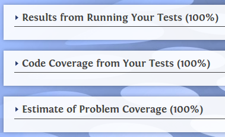
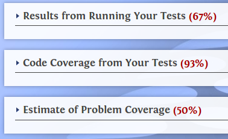

James Madison University, Spring 2018 Semester
Lab10: Web-CAT submission system
Background
In CS 149, you submit your programming assignments via Web-CAT. This system is also the means by which you receive feedback and grades for your programs.
Collaboration: You are encouraged to work with another student to complete this lab. Each of you should submit your own copy of the code. It's okay if your files are similar or identical, as long as both of your names are present at the top.
Objectives
Practice validation and if-else-if statements.
Log into Web-CAT and set up your user profile.
Submit a program and JUnit tests in a zip archive.
Key Terms
- zip file
- compressed file that contains one or more files
- code coverage
- percentage of code that was tested by JUnit tests
- problem coverage
- percentage of instructor's test cases that passed
Part 1: Understand the Problem
Write a program to prepare the monthly charge account statement for a customer of CS Card International, a credit card company. The program should take as input the previous balance on the account and the total amount of additional charges during the month. It should then compute the interest for the month, the total new balance (i.e., the previous balance plus additional charges plus interest), and the minimum payment due.
-
The interest is $0 if the previous balance was $0.00 or less. If the previous balance was greater than $0, the interest is 2% of the total owed (i.e., previous balance plus additional charges).
EXAMPLE: If the previous balance is $50.00 and the additional charges are $50.00, the interest would be $2.00. But if the previous balance is $0.00, the interest is $0 no matter what.
-
The minimum payment based on the table below:
$0.00 for new balance less than $0 new balance for new balance between $0 and $49.99 (inclusive) $50.00 for new balance between $50 and $300 (inclusive) 20% of the new balance for new balance over $300EXAMPLE: If the new balance is $38.00 then the person must pay the whole $38.00; if the balance is $128 then the person must pay $50; if the balance is $350 the minimum payment is $70.
Make sure you understand the calculations before trying to program. Write the algorithm in pseudocode on paper, and test your algorithm with some examples to see how it works.
Part 2: Program the Solution
Much of the solution including output formatting has already been done for you. Use the variables provided and keep all output statements exactly as they are.-
Download a copy of CSCard.java and CSCardTest.java as a starting point. Fill in the Javadoc comment for CSCard.java, but don't worry about writing other comments for this lab.
-
Get the provided code to compile. Write stubs for the
calculateInterestandcalculateMinPaymentmethods, returning bogus values for interest and minimum payments for now. -
Using the variables provided, code the input statements as described in CSCard.java. You must ensure that the program will not crash if the user enters a bad value (i.e., use
hasNextDouble). -
Code the rest of the main method as if the two calculate methods were finished, and then test your program. You should see that the code properly reads in a value for the balance and additional charges and outputs the values in the correct format. (The numbers should be wrong until you finish your coding.)
-
For each calculation (interest and minimum payment), you should code the corresponding method. Run the provided JUnit test cases to make sure your implementation is correct.
-
When you are sure that your code is working properly, run the main method using a variety of inputs (like you used in your examples on paper). Make sure the output still looks okay.
Part 3: Web-CAT Submission
You will NOT upload your files to Canvas today. We will grade them automatically using Web-CAT instead.
-
Open a Terminal window and navigate to the directory for your Java files.
-
Create a new zip archive containing the two Java files:
zip Lab10.zip CSCard.java CSCardTest.java -
Log into Web-CAT (webcat.cs.jmu.edu) using your JMU username and password.
-
Click the "Home" link (if not already on that page) and then click the "Submit" button next to Lab10.
-
Browse to the zip file that you just created, then click "Upload Submission."
-
Double check that the correct files were uploaded and click "Confirm."
Web-CAT will score your submission based on three criteria, which we will discuss in more detail in the lab:
- The percentage of your own test cases that passed.
- The percentage of code that was run by your test cases.
- The percentage of the instructor's test cases that passed.
| Correct Program | Incorrect Program (example) |
|---|---|
|  |  |